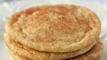

Maple Snickerdoodle Cookies

These Snickerdoodle Cookies are face-meltingly good. You should try them out!
Ingredients:
- 2 cups all-purpose flour
- 1 ½ teaspoons baking powder
- ¼ teaspoon baking soda
- 1 ½ teaspoons ground cinnamon
- ½ cup margarine, softened
- 1 cup white sugar
- 3 tablespoons real maple syrup
- 1 egg
- ½ cup white sugar
- ¼ cup maple sugar
Steps
- Preheat oven to 350 degrees F (175 degrees C). Stir together the flour, baking powder, baking soda, and cinnamon. Set aside.
- In a large bowl, cream together the margarine and 1 cup of white sugar until light and fluffy. Beat in the egg and maple syrup. Gradually blend in the dry ingredients until just mixed. In a small dish, mix together the remaining 1/2 cup white sugar and the maple sugar. Roll dough into 1 inch balls, and roll the balls in the sugar mixture. Place cookies 2 inches apart on ungreased cookie sheets.
- Bake 8 to 10 minutes in the preheated oven. Cookies will be crackly on top and look wet in the middle. Remove from cookie sheets to cool on wire racks.